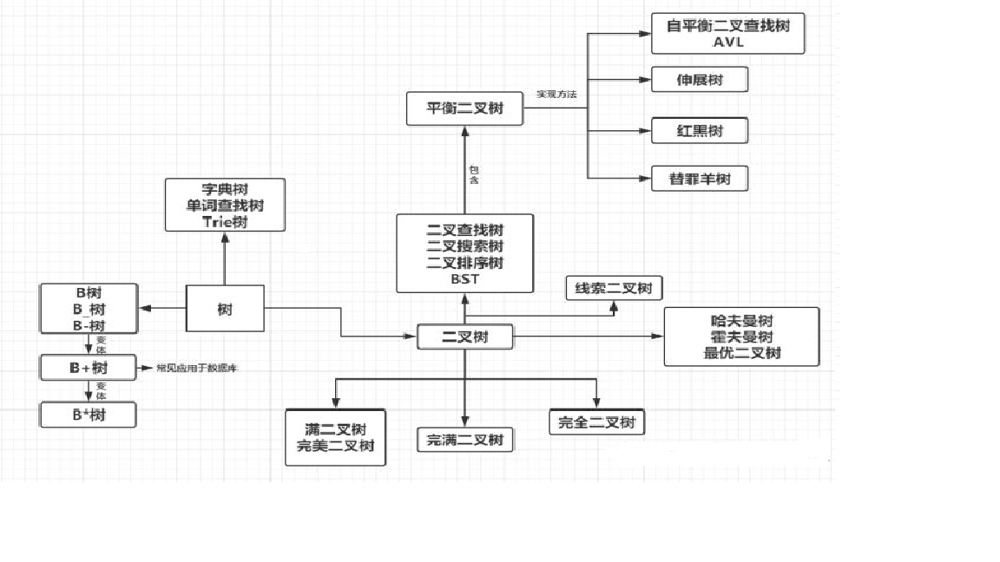
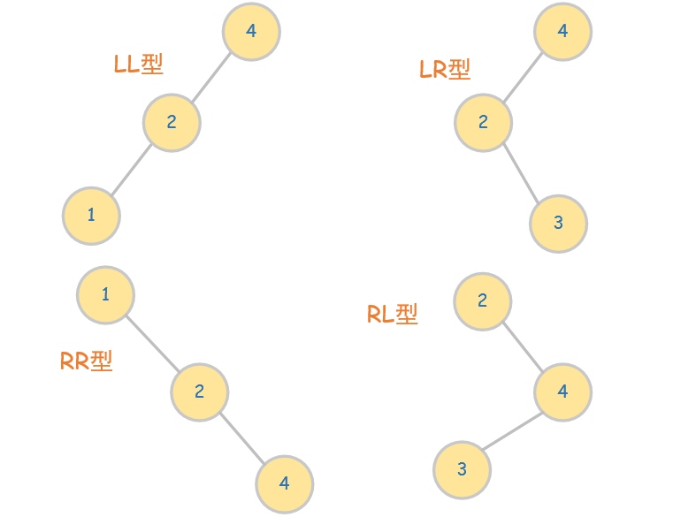
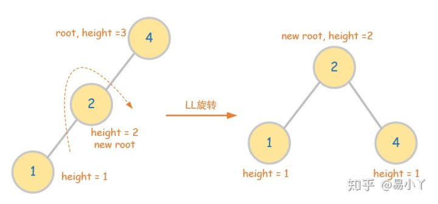
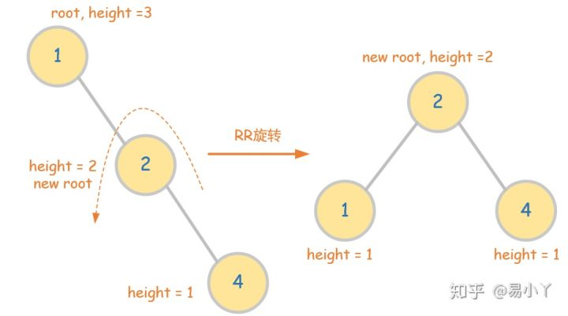
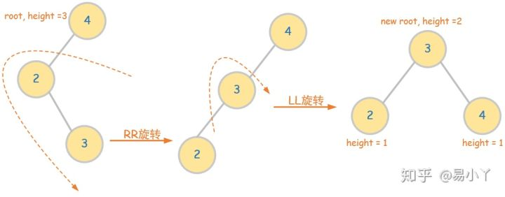

2020-08-15
23

树--知识点整理
树
一、基本概念
树 是由根结点和若干颗子树构成的。树是由一个集合以及在该集合上定义的一种关系构成的。集合中的元素称为树的结点， 所定义的关系称为父子关系。父子关系在树的结点之间建立了一个层次结构。在这种层次结构中有一个结点具有特殊的地位，这个结点称为该树的根结点，或称为树根。
1.树的基本术语
- 结点：表示树中的元素，包括数据项及若干指向其子树的分支；
- 结点的度：表示结点拥有的子树个数；
- 叶子：表示度为0的结点；
- 树的度：表示一棵树中最大的结点度数(子树数）；
- 孩子：表示结点的子树的根称为该结点的孩子（结点）；
- 双亲：表示孩子结点的上一层结点，叫该结点的(父结点)；
- 兄弟：表示同一双亲的孩子互称兄弟（结点）；
- 无序树：树中任意节点的子结点之间没有顺序关系，这种树称为无序树,也称为自由树。
- 有序树：树中任意节点的子结点之间有顺序关系，这种树称为有序树；
- 二叉树：每个节点最多含有两个子树的树称为二叉树；空树，只含根节点，左子树，右子树。
- 完全二叉树：若设二叉树的高度为h，除第 h 层外，其它各层 (1～h-1) 的结点数都达到最大个数，第h层有叶子结点， 并且叶子结点都是从左到右依次排布，这就是完全二叉树。深度为k,n个节点，左儿子2i,右儿子2i+1，
- 平衡二叉树：平衡二叉树又被称为AVL树（区别于AVL算法），它是一棵二叉排序树，且具有以下性质：它是一棵空树或它的 左右两个子树的高度差的绝对值不超过1，并且左右两个子树都是一棵平衡二叉树。
- 满二叉树：除了叶结点外每一个结点都有左右子叶且叶子结点都处在最底层的二叉树。深度为k且有2k-1个结点数。
2.二叉树
二叉树的定义
一个有穷的节点的集合。这个集合可以为空。若不为空，则它是由根结点和左右两个不相交的二叉树组成。二叉树度为二，左右有 区别。结点可以没有子节点，可以只有左结点，也可以只有右结点，也可以左右结点都有。
特殊二叉树
- 斜二叉树，都只有左结点。
- 满二叉树：每个结点都有左结点和右结点。
- 完全二叉树：除了末尾几个没有结点了，按照满二叉树的顺序排。结点从上往下，从左往右。编号与满二叉树的编号相同。也就是从满二叉树的最后几个允许没有。
二叉树的几个性质
- 二叉树的第i层的最大结点数为2^(i-1)。
- 深度为k的二叉树的最大节点数为2^k-1。
- 对于任何二叉树，度为2的节点的个数加一等于叶子节点的个数。
二叉树的抽象数据类型
- 数据对象集合：一个有穷节点集合。
- 操作集：判断是不是空，遍历，创建。遍历是最主要的操作：先序遍历--根、左树、右树；中序遍历--左树、根、右树； 后序遍历--左树、右树、根；层次遍历--从上到下，从左到右。
二叉树的存储结构
- 顺序存储：数组可不可以，完全二叉树用数组可以，从上往下从左往右编号。非根结点，父节点的序号是它的二分之一取整； 左儿子是它的二倍，右儿子是二倍加一。
- 链表存储：每个节点有数据和左儿子指针和右儿子指针。
二叉树的遍历
- 递归的遍历。先序遍历：先根结点，访问左子树，然后右子树。中序遍历：先左子树，根结点，然后访问右子树。后序遍历： 左边递归，右边递归，然后根结点。三种遍历方法的路径都是一样的，区别只是在什么时候被打印，每个节点有三种可以被打印的机会。
- 非遍历的递归。例如中序遍历的非递归遍历算法。遇到一个结点，就把它压栈，并去遍历左子树，左子树遍历完成后，从栈顶 弹出这个结点并访问他，然后再去中序遍历该节点的右子树。
- 层序遍历：遍历从根结点开始，首先将根结点入队，然后循环，结点数对，访问该节点，其左右儿子入队。
二、二叉树
二叉树是一种形状像树的数据结构，每个单元称为一个“节点(node)”，每个节点有0到两个子节点。这两个子节点称作“左孩子”和 “右孩子”，而这个节点本身可以看作是左右孩子的父节点。如果一个节点没有父节点，那么它被称作“根节点（root）”；如果一个节点没有孩子，那么它被称为“叶子节点（leaf）”。对于一棵非空的二叉树而言，可以有多个叶子节点，但有且只有一个根节点，也被称作二叉树的“入口（entry）”。二叉树的存储结构如下：
// --- 二叉树存储结构 ---
typedef int ElementType;
typedef struct TNode *BinTree;
struct TNode{
ElementType Data;
BinTree Left;
BinTree Right;
};2.二叉树遍历的实现
前序遍历（preorder traversal)：对于所有节点，访问顺序遵循：父节点->左子树->右子树的逻辑。
// --- 前序遍历 ---
void PreorderTraversal( BinTree BT ){
if (BT){
/*
* do something here
*/
printf("%d ",BT->Data);
/*Recursion. From left to right*/
PreorderTraversal(BT->Left);
PreorderTraversal(BT->Right);
}
}中序遍历（order traversal)：的顺序为左子树->右子树->根节点。因而只需要把上述/do something here*/的位置挪到两次递归后就可以了。
// --- 中序遍历 ---
void InorderTraversal( BinTree BT ){
if>Data);
InorderTraversal(BT->Left);
/*
* do something here
*/
printf("%d ",BT->Data);
InorderTraversal(BT->Right);
}
}后序遍历（Postinorder traversal)：和前序遍历的区别是遍历顺序改为左子树->父节点->右子树。因而只需要把上述/do something here*/的位置换一下就可以了。
// --- 后序遍历 ---
void PostorderTraversal( BinTree BT ){
if>Data);
PostorderTraversal(BT->Left);
PostorderTraversal(BT->Right);
/*
* do something here
*/
printf("%d ",BT->Data);
}
}层次遍历（Postinorder traversal)：将二叉树看作一栋楼，每层有不同数目的房间，按照从上到下、从左到右的顺序依次访问节点。实现程序不再使用递归，而是使用了“先进先出”的queue容器。
// --- 层次遍历 ---
void LevelTraversal(BinTree root){
queue q;
q.push(root);
while(!q.empty()){
BinTree front = q.front();
/*
* do something here
*/
cout<Data<<' ';
q.pop();
if(front->Left)
q.push(front->Left);
if(front->Right)
q.push(front->Right);
}
} 3.二叉树搜索树
二叉搜索树，也叫二叉查找树、排序二叉树等，是指空树或者具备如下性质的二叉树：
- 若任意节点的左子树不空，则左子树上所有节点的值均小于它的根节点的值；
- 若任意节点的右子树不空，则右子树上所有节点的值均大于它的根节点的值；
- 任意节点的左、右子树也分别为二叉查找树；
- 没有键值相等的结点
二叉搜索树插值的方法：
- 若为空树，则将X作为根节点；
- 若不为空树，且X小于BST的根节点值，则将X插入左子树;
- 若不为空树，且X大于BST的根节点值，则将X插入右子树。
// --- BST的插值 ---
BinTree Insert( BinTree BST, ElementType X ){
if (!BST){
BST = new TNode;
BST->Data = X;
BST->Left = BST->Right = NULL;
return BST;
}
else if (XData) BST->Left = Insert(BST->Left,X);
else if (X>BST->Data) BST->Right = Insert(BST->Right,X);
return BST;
} 二叉搜索树插值的方法：
- 如果当前节点为空，则返回空；
- 如果X等于当前节点的值，则返回该节点；
- 如果X大于当前节点的值，则去该节点的右子树查找；
- X小于当前节点的值，则去该节点的左子树查找。
// --- BST的查找---
BinTree Insert( BinTree BST, ElementType X ){
if (!BST){
BST = new TNode;
BST->Data = X;
BST->Left = BST->Right = NULL;
return BST;
}
else if (XData) BST->Left = Insert(BST->Left,X);
else if (X>BST->Data) BST->Right = Insert(BST->Right,X);
return BST;
} 4.平衡二叉搜索树
对于一个有N个节点的二叉树，其平均查找时间为O(logN)，但如果这棵树非常不平衡，比如退化或近似为链，那么最坏查找时间为O(N)。 针对这种情况，可以建立一种的平衡二叉搜索树（也称AVL树），其任何节点两个子树的高度最大差别为1，所以也被称作高度平衡树。 AVL树中，其最坏和平均的查找时间均为O(logN)。
对于AVL树而言，其所有节点的平衡因子只可能有三个取值：-1，0和1。所以对于AVL树，每插入一个节点，我们需要对其进行维护，使其仍 为AVL树。新插入一个节点后，其若不为AVL树，那么其根节点最大的BF只可能为2（因为之前的BF最大为1），可通过旋转操作，即增大较低子树的高度，减小较高子树的高度，使得其变得平衡。

图1 四种不同的失衡情况
图1 四种不同的失衡情况
LL旋转操作
- old root的左孩子将会成为根节点new root，old root 将会成为new root的右孩子；
- 由上可知，new root的之前的右孩子将要让位给old root，因而new root的右孩子得挪地儿；
- 由BST的维护原理可知，new root，也即old root的左孩子，它的右孩子肯定是比old root小的，所以它只能被挪到old root的左孩子。

图2.LL旋转操作
图2.LL旋转操作
avlTree LL(avlTree &root){
/*like [3,2,null,1]*/
/*left height 减1,
*right height加1 */
/* root->Left is root*/
avlTree node = root->Left;
node->Right = root;
return node;
}RR旋转操作
和LL是对称的(把上述代码的left和right全部互换即可)

图3.RR旋转操作
图3.RR旋转操作
avlTree RR(avlTree &root){
/*like [2,null,3,null,4]*/
/*right height 减1,
*left height加1 */
/* root->Right is new root*/
avlTree node = root->Right;
root->Right = node->Left;
node->Left = root;
return node;
}LR旋转操作
首先第一个字母L说明root的左子树比右子树高，第二个字母R说明对root的左子树而言，其右子树比左子树高。
因此分为两步：第一，先将root的左子树做一次RR旋转，使其变为LL型；然后第二步，将root做一次LL旋转。

图4.LR旋转操作
图4.LR旋转操作
avlTree LR(avlTree &root){
/*like [4,2,null,null,3]*/
root->Left = RR(root->Left);
/*now it turns into [4,3,null,2]
*so use LL to original root once*/
return LL(root);
}RL旋转操作
和LR是对称的，分为两步：第一，将root的右子树做一次LL旋转，使其变为RR型；第二步将root做一次RR旋转。
avlTree RL(avlTree &root){
/*like [2,null,4,3]*/
root->Right = LL(root->Right);
/*now it turns into [2,null,3,null,4]
*so use RR to original root once*/
return RR(root);
}5.完全二叉树
完全二叉树 是一种很”饱满“的树：它的所有节点尽可能从上到下、从左到右地将每层都填满。用定义来说，若二叉树的深度为h，那么第1到h-1层的节点达到最大个数，第h层的节点都集中在最左边，就是完全二叉树。
num=0;
void CBinTree(int root,int N){
/* N: number of nodes*/
/*inorder: preorder traversal results*/
if(root>N)
return;
CBinTree(root*2,N);
TreeNodes[root]=inorder[num++];
CBinTree(root*2+1,N);
}
Comments

回复

回复

回复

回复